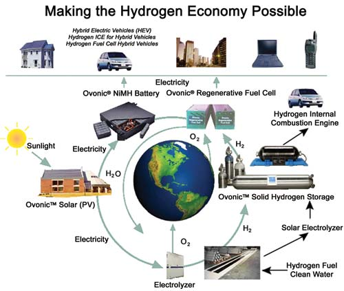

ECD OVONICS
Ovshinsky’s Hydrogen Loop: Ovshinksy’s model for a hydrogen-based economy is illustrated by the hydrogen loop, which is both renewable and pollution-free. Using the sun as a sustainable energy source, solar electricity can either be stored in NiMH batteries for hybrid vehicles, or used to generate hydrogen through electrolysis, then stored in a solid hydrogen system to power non-polluting, internal combustion engines or hydrogen fuel cells, which are still under development at Energy Conversion Devices (ECD). Other forms of sustainable energy, such as wind, hydroelectric and geothermal, could also be used to generate hydrogen by electrolysis.